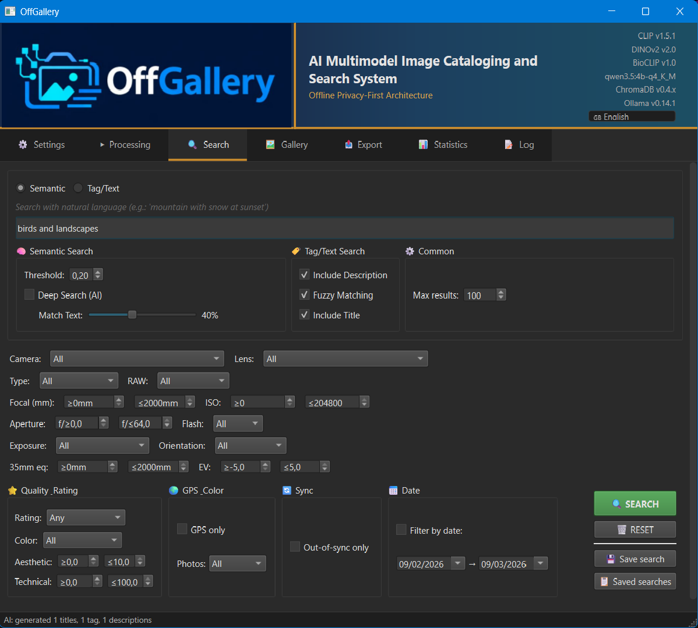
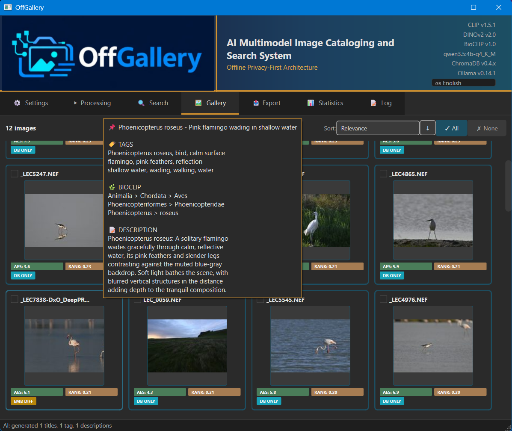
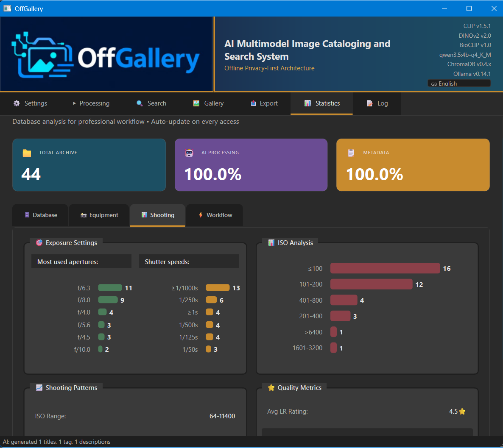

OffGallery
1Cos'è OffGallery
OffGallery è un sistema di catalogazione e ricerca fotografica completamente offline. Analizza automaticamente ogni immagine con modelli AI locali, generando embedding semantici, tassonomia biologica, tag, descrizioni e score estetici — tutto senza inviare un singolo pixel a servizi cloud.
È progettato per fotografi che gestiscono archivi di migliaia di file RAW e vogliono trovare qualsiasi foto in secondi usando linguaggio naturale: "ritratto controluce al tramonto", "airone cenerino in volo", "paesaggio con neve e montagne".
Cosa può fare OffGallery
- Analizza 25+ formati RAW (Canon CR2/CR3, Nikon NEF, Sony ARW, Fuji RAF e altri) e formati standard (JPG, PNG, TIFF, WEBP)
- Genera embedding semantici CLIP (768 dimensioni) per ricerca in linguaggio naturale
- Calcola embedding DINOv2 per ricerca per similarità visiva
- Classifica automaticamente flora e fauna con BioCLIP2 (~450.000 specie, 7 livelli tassonomici)
- Genera tag, descrizioni e titoli tramite modello LLM Vision locale (Qwen3.5 4B via Ollama)
- Valuta la qualità artistica con score estetico (0–10) e tecnica (nitidezza/rumore)
- Geocodifica offline le coordinate GPS in gerarchia Continente › Paese › Regione › Città
- Si integra con Lightroom tramite import/export XMP bidirezionale
- Processa direttamente cataloghi .lrcat di Lightroom come sorgente di input
Nessun dato, immagine o metadato lascia mai il tuo computer. Tutti i modelli AI girano localmente. La connessione internet è richiesta solo al primo avvio per scaricare i modelli (~6,7 GB).
2Primo Avvio
Dopo l'installazione tramite wizard (vedi installer/INSTALL_GUIDE.md), avvia OffGallery dall'icona desktop o dalla voce nel menu applicazioni. Al primo avvio l'applicazione scarica automaticamente i modelli AI (~6,7 GB totali). Un pannello di progresso mostra l'avanzamento. Questo passaggio avviene una volta sola.
Avvia OffGallery dal collegamento creato dall'installer.
Al primo avvio appare una splash screen che scarica i modelli AI. Connessione internet necessaria solo in questo momento.
Al termine del download l'interfaccia principale appare con 7 tab.
(Opzionale) Assicurati che Ollama sia in esecuzione se vuoi generare tag e descrizioni LLM. Su Windows avvia l'app Ollama; su macOS/Linux il daemon parte automaticamente.
Dal secondo avvio in poi OffGallery è completamente offline. Non serve alcuna connessione internet.
3Panoramica Interfaccia
L'interfaccia è organizzata in 7 tab orizzontali nella parte superiore della finestra:
| Tab | Funzione Principale |
|---|---|
| Elaborazione | Analisi AI delle immagini: embedding, BioCLIP, LLM, score estetico/tecnico, geotag |
| Ricerca | Query semantica in linguaggio naturale + filtri EXIF/score/data/colore |
| Galleria | Visualizzazione risultati con badge, anteprima e ordinamento avanzato |
| Statistiche | Analisi del database: tipologia, date, obiettivi, score, rating |
| Esportazione | Export XMP, copia file con struttura originale, sync con Lightroom |
| Configurazione | Impostazioni modelli AI, LLM, lingua UI e output, editor esterni |
| Log | Monitoraggio in tempo reale dei processi di elaborazione |
3.1 Indicatori di Stato Modelli
Nell'angolo in alto a destra della finestra principale è presente una barra fissa con indicatori colorati per ogni componente AI. A colpo d'occhio puoi verificare cosa è attivo senza entrare in Configurazione.
| Colore | Significato |
|---|---|
| ● Verde | Componente trovato e funzionante |
| ● Grigio | Componente non trovato o disabilitato |
| ● Arancio | Anomalia: componente raggiungibile ma con problemi (es. modello LLM non scaricato in Ollama) |
I componenti monitorati sono: CLIP, DINOv2, BioCLIP, Aesthetic, Technical, LLM Vision (Ollama), ExifTool e Database.
L'indicatore LLM mostra il nome del backend configurato (es. Ollama) e si aggiorna automaticamente ogni 30 secondi: se avvii Ollama dopo aver aperto OffGallery, il led diventerà verde senza dover riavviare l'applicazione.
4Tab Elaborazione
Il tab Elaborazione è il centro operativo di OffGallery. Da qui si avviano le sessioni di analisi AI che popolano il database con embedding, tag, descrizioni e metadati.
4.1 Sorgente Immagini
Nella parte superiore del tab è possibile scegliere due tipi di sorgente:
Sorgente: Directory
Comportamento predefinito. OffGallery scansiona la cartella selezionata (e le sue sottocartelle) cercando tutti i formati supportati. Usa il pulsante Sfoglia per selezionare la directory, oppure inserisci il percorso manualmente.
La cartella INPUT/ nella root di OffGallery è la destinazione predefinita. Copia qui le nuove foto da elaborare.
Sorgente: Catalogo Lightroom (.lrcat)
Seleziona direttamente un file .lrcat di Lightroom. OffGallery legge il catalogo in sola lettura tramite SQLite: estrae la lista completa dei file indicizzati (con percorso assoluto) e li usa come sorgente senza toccare il catalogo originale.
Questo approccio è ideale per:
- Elaborare l'intera libreria Lightroom esistente senza spostare file
- Mantenere la struttura di cartelle originale multi-disco
- Combinare il catalogo Lightroom con i tag/descrizioni generati da OffGallery
Se Lightroom è aperto con il catalogo selezionato, OffGallery può comunque leggerlo (accesso in sola lettura). Il catalogo non viene mai modificato.
4.2 Modalità di Elaborazione
Tre modalità selezionabili tramite radio button:
| Modalità | Comportamento |
|---|---|
| Solo nuove | Elabora solo le immagini non ancora presenti nel database. Le foto già analizzate vengono saltate. |
| Riprocessa tutte | Rianalizza tutte le immagini nella sorgente, anche quelle già nel database. Utile dopo aver aggiornato un modello o cambiato parametri. |
| Riprocessa tutte + Solo Gen. AI | Modalità speciale: rigenera solo tag, descrizione e titolo (LLM) sulle immagini già nel database. Salta EXIF ed embedding. Vedi § 4.4. |
4.3 Opzioni AI (Generazione LLM)
Il riquadro Generazione AI controlla il comportamento del modello LLM Vision:
| Opzione | Descrizione |
|---|---|
| Genera Tag | Attiva la generazione di parole chiave descrittive dell'immagine |
| Genera Descrizione | Attiva la generazione di una descrizione narrativa |
| Genera Titolo | Attiva la generazione di un titolo breve |
| Max tag | Numero massimo di tag da generare (default: 10) |
| Sovrascrivi | Se spuntato, sovrascrive tag/descrizione/titolo esistenti. Se non spuntato: per i tag fa merge (aggiunge solo i nuovi); per descrizione e titolo salta se già presenti. |
Con "Sovrascrivi" disattivato, il merge è case-insensitive: se il database contiene già "Uccello" e il LLM genera "uccello", il tag non viene duplicato.
4.4 Modalità "Solo Gen. AI"
La modalità Solo Gen. AI è accessibile attivando prima "Riprocessa tutte" e poi spuntando il checkbox "Solo Gen. AI" che appare accanto.
Questa modalità è pensata per un caso d'uso molto frequente: hai già analizzato le foto ma vuoi aggiornare tag, descrizioni e titoli con un modello LLM migliore, senza dover rieseguire tutta la pipeline (EXIF, embedding CLIP/DINOv2, BioCLIP, aesthetic score, ecc.).
Cosa fa "Solo Gen. AI"
- Filtra solo le immagini già presenti nel database (le nuove foto vengono ignorate)
- Estrae una miniatura a 512px dall'originale per il modello LLM
- Chiama il modello LLM Vision con il prompt configurato
- Aggiorna nel database solo i campi:
tags,description,title - Salta completamente: EXIF, embedding CLIP/DINOv2, BioCLIP, score estetico/tecnico, geotag
Cosa non fa "Solo Gen. AI"
- Non tocca il campo
bioclip_taxonomy(rimane invariato) - Non aggiorna embedding (le ricerche semantiche precedenti rimangono valide)
- Non elabora foto nuove non ancora nel database
Quando usarla
- Hai aggiornato Ollama a un modello più capace (es. da 4B a 7B)
- Vuoi rigenerare i tag in una lingua diversa
- I tag generati con il modello precedente erano insoddisfacenti
- Vuoi aggiungere descrizioni a foto già importate senza descrizione
Seleziona almeno uno fra "Genera Tag", "Genera Descrizione" o "Genera Titolo" prima di avviare in modalità Solo Gen. AI. Altrimenti OffGallery mostra un avviso.
4.5 Avvio e Monitoraggio
Premi il pulsante Avvia per iniziare l'elaborazione. Durante l'analisi:
- Una barra di progresso mostra l'avanzamento (file corrente / totale)
- Il pannello Log (tab Log) mostra in tempo reale ogni operazione
- Il pulsante cambia in Interrompi per fermare l'elaborazione in modo sicuro
Le elaborazioni complete e quelle interrotte dall'utente sono sicure: il database viene aggiornato dopo ogni immagine completata.
Puoi passare ad altri tab (Ricerca, Galleria) mentre l'elaborazione è in corso. Il processo continua in background.
5Tab Ricerca

Il tab Ricerca è il cuore della discovery fotografica. Combina ricerca semantica (linguaggio naturale) con filtri avanzati su metadati, score e date.
5.1 Ricerca Semantica (CLIP)
La ricerca semantica usa embedding CLIP per trovare immagini il cui contenuto visivo è simile al concetto espresso nella query, indipendentemente dalle parole usate.
Digita la query in italiano nel campo di testo principale: es. "tramonto sul mare con barche".
OffGallery traduce automaticamente la query in inglese (via Argostranslate offline) e la codifica con il modello CLIP.
I risultati vengono ordinati per similarità coseno con tutti gli embedding nel database.
Regola il cursore Soglia per filtrare risultati poco pertinenti (default ~0.20).
Scrivi query descrittive del contenuto: "uccello in volo su sfondo cielo blu" funziona meglio di "airone" (troppo generico). Puoi includere colori, atmosfera, composizione.
5.2 Ricerca per Tag
La ricerca per tag usa fuzzy matching per trovare immagini che contengono specifiche parole chiave. La ricerca è:
- Case-insensitive: "Uccello" e "uccello" sono equivalenti
- Fuzzy: "flamingo" trova anche "fenicottero" se il modello ha usato entrambi
- Multilingua: funziona nella lingua in cui sono stati generati i tag
Puoi combinare più tag separati da virgola per una ricerca AND.
5.3 Filtri Avanzati
I filtri si accumulano: attivarne più di uno restringe progressivamente i risultati.
| Categoria | Filtri Disponibili |
|---|---|
| EXIF | Camera (marca/modello), Obiettivo, Focale (mm), ISO, Tempo di posa, Diaframma (f/) |
| Score | Score estetico minimo (0–10), Score tecnico minimo (0–10) |
| Rating | Stelle Lightroom: da 0 a 5 (compatibile con import/export XMP) |
| Colore | Etichetta colore (rosso, giallo, verde, blu, viola) o Bianco/Nero rilevato automaticamente |
| Data | Intervallo date scatto (da → a) |
| Formato | Solo RAW, Solo JPEG, o tutti |
5.4 Ricerche Salvate
Puoi salvare la configurazione completa di una ricerca (query + tutti i filtri attivi) con un nome personalizzato. Le ricerche salvate sono richiamabili in un click dal menu a tendina.
Configura la ricerca desiderata (query, soglia, filtri).
Clicca Salva ricerca e assegna un nome.
Per richiamarla in futuro: selezionala dal menu a tendina "Ricerche salvate" e premi Carica.
Le ricerche vengono salvate in database/saved_searches.json.
6Tab Galleria

La Galleria visualizza i risultati della ricerca corrente. Ogni immagine è mostrata come miniatura con badge informativi sovrapposti.
6.1 Badge e Indicatori
| Badge | Significato |
|---|---|
| ★ 4.2 | Score estetico (0–10). Colore: verde >7, giallo 5–7, grigio <5 |
| ⚙ 8.1 | Score tecnico (nitidezza/rumore, solo immagini non-RAW) |
| ★★★★ | Rating Lightroom (stelle 1–5) |
| B/N | Immagine in bianco e nero rilevata automaticamente |
| ● | Etichetta colore Lightroom (rosso/giallo/verde/blu/viola) |
Tooltip al passaggio del mouse
Passando il mouse su una miniatura appare un tooltip con:
- Titolo e descrizione generati dal LLM
- Lista completa dei tag
- Tassonomia BioCLIP (se rilevata): es. Animalia › Aves › Ardeidae › Ardea cinerea
- Gerarchia geografica: es. GeOFF | Europe | Italy | Sardegna | Oristano
- Metadati EXIF principali (camera, obiettivo, ISO, tempo)
6.2 Ordinamento
Il menu Ordina per offre 7 criteri:
- Rilevanza (score similarità CLIP — predefinito nelle ricerche semantiche)
- Data scatto (crescente o decrescente)
- Nome file
- Rating (stelle)
- Score estetico
- Score tecnico
- Score composito (estetico + tecnico)
Per ogni criterio è possibile scegliere direzione ASC o DESC.
6.3 Menu Contestuale
Click destro su qualsiasi miniatura apre il menu contestuale con le azioni disponibili:
| Azione | Descrizione |
|---|---|
| Apri in editor esterno | Apre il file originale in Lightroom, Capture One, o altro editor configurato |
| Mostra in Esplora Risorse | Apre la cartella contenente il file originale |
| Trova immagini simili | Avvia una ricerca per similarità visiva (DINOv2) usando questa immagine come query |
| Modifica tag | Apre un editor inline per aggiungere/rimuovere tag manualmente |
| Rigenera AI | Rigenera tag, descrizione e titolo per questa singola immagine |
| Export XMP | Esporta subito il file XMP per questa immagine |
7Tab Statistiche

Il tab Statistiche offre una panoramica analitica dell'intero archivio indicizzato:
- Distribuzione formati: quante RAW, quante JPEG, PNG, ecc.
- Timeline scatti: distribuzione temporale per anno/mese
- Strumentazione: le fotocamere e gli obiettivi più usati
- Parametri di scatto: distribuzioni di ISO, tempo, diaframma
- Score estetici e tecnici: istogrammi e medie
- Rating: distribuzione stelle 0–5
- Tag cloud: le parole chiave più frequenti nell'archivio
8Tab Esportazione
Il tab Esportazione è organizzato in tre sezioni distinte — Metadati XMP, Foglio dati CSV e File immagini — combinabili liberamente. In cima al riquadro trovi la barra dei Preset per salvare e richiamare configurazioni complete.
8.1 Preset Export
Ogni configurazione dell'intero tab (tutti i flag attivi, le opzioni avanzate) può essere salvata con un nome e richiamata in seguito.
- 💾 Salva preset: salva la configurazione corrente con un nome a tua scelta. Se il nome esiste già, viene chiesto se sovrascrivere.
- 📋 Preset salvati: apre la lista dei preset salvati. Doppio clic o pulsante Carica per applicare; pulsante Elimina per rimuovere.
L'ultima configurazione usata viene ricordata automaticamente: la prossima volta che apri il tab, ritrovi esattamente le stesse opzioni selezionate. I preset vengono salvati in database/saved_exports.json.
8.2 Metadati XMP
Scrive file .xmp sidecar o embedded compatibili con Lightroom, DxO, Capture One e qualsiasi software che rispetta lo standard XMP/IPTC.
| Opzione | Descrizione |
|---|---|
| XMP Sidecar | File .xmp separato accanto all'originale |
| XMP Embedded | Metadati scritti direttamente nel file immagine |
| Includi DNG | Permette l'embedded anche nei file DNG (disabilitato di default per sicurezza) |
I campi esportati includono: tag utente e LLM (dc:subject), tassonomia BioCLIP (lr:hierarchicalSubject con prefisso AI|Taxonomy|), gerarchia geografica (GeOFF|), stelle, descrizione e titolo LLM.
Destinazione XMP
Puoi scegliere tra Accanto all'originale (il file .xmp viene creato nella stessa cartella del RAW) e Cartella unica (tutti gli XMP in una directory a tua scelta).
8.3 Foglio dati CSV
Esporta un file CSV completo con tutti i metadati del database (46 campi: dati file, camera, obiettivo, impostazioni di scatto, date, GPS, valutazioni AI, tag, ecc.).
| Opzione | Descrizione |
|---|---|
| Escludi GPS | Omette le colonne GPS dal CSV (coordinate, città, paese) |
| Escludi EXIF | Omette i dati tecnici EXIF (camera, obiettivo, esposizione, ISO, flash, ecc.) |
Entrambe le opzioni sono disabilitate di default: il CSV include tutto. Le colonne rimangono presenti nel file anche quando escluse (schema fisso), ma i valori sono vuoti — utile per importatori che si aspettano uno schema predefinito.
8.4 File immagini
Copia i file originali in una destinazione mantenendo la gerarchia di cartelle originale, anche quando le foto provengono da dischi diversi.
| Opzione | Descrizione |
|---|---|
| Escludi GPS | Rimuove i tag GPS dalla copia tramite ExifTool. L'originale non viene mai modificato. |
| Escludi EXIF | Rimuove tutti i metadati EXIF dalla copia (camera, obiettivo, impostazioni). L'originale non viene mai modificato. |
| Mantieni struttura | Ricrea la gerarchia di cartelle originale nella destinazione |
| Sovrascrivi esistenti | Sovrascrive i file se già presenti nella destinazione |
Esempio con foto su due dischi:
Sorgente: C:\Foto\2024\Sardegna\IMG_001.NEF D:\Archivio\2023\Toscana\DSC_999.NEF Destinazione (es. E:\Backup): E:\Backup\C_drive\Foto\2024\Sardegna\IMG_001.NEF E:\Backup\D_drive\Archivio\2023\Toscana\DSC_999.NEF
Su macOS il prefisso usa il nome del volume, su Linux il mount point.
9Tab Configurazione
Il tab Configurazione permette di personalizzare i parametri di tutti i modelli AI e le preferenze dell'applicazione. Le impostazioni vengono salvate in config_new.yaml.
Sezione: Connessione LLM (Ollama)
| Parametro | Descrizione | Default |
|---|---|---|
| Endpoint | URL del server Ollama | http://localhost:11434 |
| Modello | Nome del modello Ollama | qwen3.5:4b-q4_K_M |
| Timeout | Secondi massimi per risposta | 180 |
Sezione: Lingua
| Impostazione | Descrizione |
|---|---|
| Lingua interfaccia | Lingua dei menu e pulsanti dell'app (IT/EN/FR/DE/ES/PT) |
| Lingua output LLM | Lingua in cui il modello LLM genera tag e descrizioni (indipendente dalla UI) |
Puoi avere l'interfaccia in italiano e i tag generati in inglese, o viceversa. Le ricerche per tag si adattano alla lingua dei contenuti.
Sezione: Editor esterno
Configura il percorso dell'editor fotografico esterno (Lightroom, Capture One, ecc.) per aprire i file originali direttamente dalla Galleria.
Sezione: Modelli AI
Percorso della directory dei modelli AI (Models/). Può essere relativo alla root di OffGallery o un percorso assoluto (es. su un disco esterno capiente).
10Tab Log
Il tab Log è il pannello di monitoraggio centralizzato dell'applicazione. Cattura in tempo reale tutti i messaggi prodotti da qualsiasi modulo — compresi gli output di print() e stderr — e li mostra in un'area di testo scorrevole con sintassi colorata.
Contenuto del log
- Log di avvio dell'applicazione (caricati dalla splash screen, sezione
═══ LOG AVVIO ═══) - Ogni file in elaborazione: operazione corrente (EXIF, embedding CLIP/DINOv2, BioCLIP, LLM, geotag, score estetico/tecnico)
- Avvisi WARNING per file non elaborabili (RAW senza anteprima estraibile, timeout Ollama)
- Errori ERROR con dettagli tecnici per il troubleshooting
- Messaggi di sistema e di configurazione al cambio di impostazioni
Formato di ogni riga
[HH:MM:SS] LEVEL - nome.modulo - messaggio
Controlli disponibili
| Controllo | Funzione |
|---|---|
| Checkbox DEBUG | Mostra/nasconde messaggi di debug dettagliati (molto verbosi, utili per diagnosi) |
| Checkbox INFO | Mostra/nasconde messaggi informativi normali (operazioni in corso) |
| Checkbox WARNING | Mostra/nasconde avvisi (file saltati, parametri fuori range) |
| Checkbox ERROR | Mostra/nasconde errori critici. Copre anche CRITICAL |
| Pulsante 🗑️ Clear | Svuota il log dalla visualizzazione e dalla memoria |
Il log mantiene in memoria al massimo 500 righe. Le più vecchie vengono eliminate automaticamente per evitare degrado delle prestazioni durante elaborazioni lunghe.
Clicca nell'area di testo, premi Ctrl+A per selezionare tutto, poi Ctrl+C per copiare. Incolla il testo in un'issue GitHub o in un messaggio di supporto per fornire il contesto tecnico completo.
11BioCLIP e Tassonomia Biologica
BioCLIP2 è un modello Vision specializzato nel riconoscimento di specie biologiche. È stato addestrato su ~450.000 specie del Tree of Life e produce una classificazione tassonomica completa a 7 livelli:
Regnum › Phylum › Classis › Ordo › Familia › Genus › Species es: Animalia › Chordata › Aves › Pelecaniformes › Ardeidae › Ardea › Ardea cinerea
Dove appare la tassonomia
- Galleria (tooltip): sezione "Tassonomia" separata dai tag
- Export XMP: come
HierarchicalSubjectcon prefissoAI|Taxonomy|... - Database: campo dedicato
bioclip_taxonomy(mai mescolato con i tag)
Il nome latino della specie (es. Ardea cinerea) è inserito programmaticamente da OffGallery — non viene chiesto al LLM, che spesso produce errori sui nomi scientifici. Il LLM usa il nome come contesto ma non lo genera.
12Geotag Offline
OffGallery legge le coordinate GPS dai metadati EXIF e le converte in una gerarchia geografica leggibile, usando dati GeoNames bundled (~130.000 città): nessuna API esterna, nessuna connessione necessaria.
Il formato output è:
GeOFF | Europe | Italy | Sardegna | Trinità d'Agultu
In export XMP appare come HierarchicalSubject con prefisso GeOFF|, visibile in Lightroom come gerarchia separata dalle keyword utente.
13Sync State XMP
OffGallery traccia lo stato di sincronizzazione di ogni immagine con il suo file XMP:
| Stato | Significato |
|---|---|
PERFECT_SYNC | Il file XMP esiste ed è aggiornato con il contenuto del database |
DIRTY | Il database è stato aggiornato dopo l'ultimo export XMP — il file XMP è obsoleto |
NO_XMP | Nessun file XMP ancora esportato per questa immagine |
XMP_NEWER | Il file XMP è stato modificato esternamente (es. da Lightroom) dopo l'ultimo import |
14Supporto Multilingua
OffGallery gestisce tre livelli di lingua indipendenti:
- Lingua dell'interfaccia: pulsanti, menu, etichette (6 lingue: IT, EN, FR, DE, ES, PT)
- Lingua output LLM: lingua in cui il modello genera tag e descrizioni (configurabile separatamente)
- Lingua query: le query di ricerca vengono tradotte automaticamente offline via Argostranslate — puoi cercare in italiano anche se i tag sono in inglese
15FAQ — Domande Frequenti
Ollama non risponde / timeout
Verifica che Ollama sia in esecuzione. Su Windows: cerca "Ollama" nel system tray. Su macOS/Linux: esegui ollama list nel terminale. Assicurati che il modello qwen3.5:4b-q4_K_M sia scaricato (ollama pull qwen3.5:4b-q4_K_M).
I tag generati sono in inglese ma voglio l'italiano
Vai in Configurazione → Lingua output LLM e seleziona "Italiano". Usa poi "Solo Gen. AI" per rigenerare i tag su tutte le foto già nel database.
La ricerca semantica non trova foto pertinenti
Gli embedding CLIP potrebbero essere stati generati con una versione incompatibile del modello. Rielabora le foto con "Riprocessa tutte" dopo aver verificato le versioni delle librerie (vedi INSTALL_GUIDE.md per i requisiti di versione).
Una foto RAW non viene elaborata
Alcuni formati RAW high-efficiency (es. NEF con compressione loss-less) non contengono un'anteprima JPEG estraibile. In questi casi OffGallery salva i metadati EXIF ma salta embedding e LLM. Controlla il tab Log per i dettagli.
Come aggiorno OffGallery?
Scarica il nuovo ZIP da GitHub, estrai sovrascrivendo la cartella esistente (esclusa la cartella database/ e INPUT/). Il database è compatibile tra versioni.
Posso usare un modello LLM diverso da Qwen3.5?
Sì. In Configurazione puoi cambiare il nome del modello Ollama. Modelli testati: llava:7b, minicpm-v, moondream. Risultati migliori con modelli vision multimodali. Dopo il cambio, aggiorna i parametri num_ctx e top_k in config_new.yaml.
I dati BioCLIP appaiono come keyword in Lightroom
È il comportamento atteso. Appariranno come gerarchia separata AI > Taxonomy > ... nella struttura parole chiave di Lightroom. Non interferisce con le tue keyword.
16Troubleshooting
| Problema | Causa probabile | Soluzione |
|---|---|---|
| Score CLIP sempre vicini a zero | Embedding generati con versione errata di transformers | Esegui pip install transformers==4.57.3 e reimporta le foto |
| Geotag errato (città sbagliata) | GPS con longitudine Ovest non interpretata correttamente | Rielabora le foto con versione ≥ 10 Mar 2026 |
| App si avvia ma non mostra finestra (macOS) | Segfault Qt/Cocoa al primo avvio | Usa il launcher aggiornato che scarica i modelli in processo separato |
| Errore "mat1 and mat2 shapes cannot be multiplied" | Incompatibilità versione transformers con CLIP ViT-L/14 | Installa le versioni pinnate: transformers==4.57.3 huggingface-hub==0.36.0 open-clip-torch==3.2.0 |
| Import XMP non importa alcuni tag | Tag con prefisso AI|Taxonomy| o GeOFF| vengono filtrati intenzionalmente |
È il comportamento corretto. Questi tag sono gestiti internamente da OffGallery. |
| Conda non trovato all'avvio (macOS) | Architettura Miniconda sbagliata (x86_64 su Apple Silicon) | Reinstalla Miniconda con architettura arm64. Vedi README sezione Installazione. |
Segnala problemi e richieste su GitHub Issues. Discussioni e annunci su GitHub Discussions.
OffGallery · Manuale Utente v1.0 · Marzo 2026 · github.com/HEGOM61ita/OffGallery